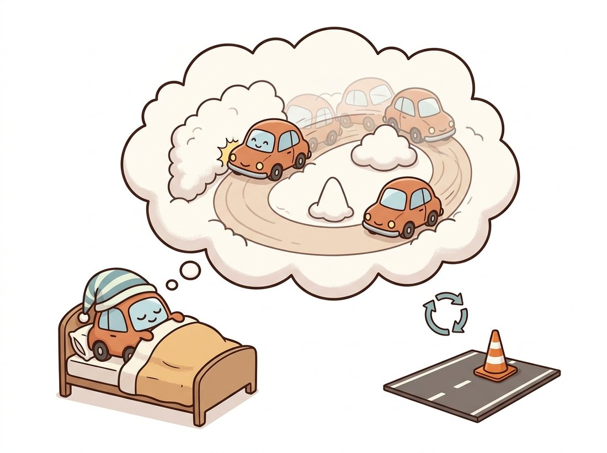

"I do not need to crash a thousand real cars to learn to drive. I crash a thousand imaginary ones, in a dream I built from watching, and wake up cautious."
An Agent That Learned to Plan Inside Its Own Head
A world model is a learned simulator: it compresses observations into a latent state and learns a transition function that predicts the next latent state from the current one and an action, so an agent can train by rolling out imagined futures instead of acting in the costly real world. The recurrent state-space model (RSSM) is the canonical recipe, splitting the latent into a deterministic memory and a stochastic part so it can model both predictable structure and genuine uncertainty. This section builds the RSSM and shows how Dreamer trains a policy entirely inside it.
Every generative model so far in this chapter produced observations: frames, objects, scenes. A world model produces dynamics. It is the point where generative vision meets decision-making, and it closes an arc that began far back in the book. Chapter 15 introduced state estimation with the Kalman filter: a hidden state, a motion model that predicts how it evolves, and observations that correct it. A world model is that idea made fully learned and deeply nonlinear, with a VAE-style encoder (Chapter 31) for the observation model and a neural network for the transition. The cross-reference map names this exactly: motion models and Kalman state estimation, deepened through video understanding and VAE latents, transformed here into learned latent dynamics.
This is the one section of the book that borrows vocabulary from reinforcement learning, the branch of machine learning where an agent learns by acting. The handful of terms below are all you need. An environment is the world the agent acts in; at each step the agent observes a state, picks an action, and receives a scalar reward measuring how good that step was. A policy is the function (here a small neural network) that maps a state to an action; learning a good policy is the goal. A value is the expected total future reward from a state, so a critic that estimates value tells the policy how promising a situation is. An actor-critic method trains the policy (actor) and the value estimate (critic) together. Model-free learning improves the policy purely from real interactions with no internal model of the environment; the world-model approach of this section is its opposite, learning such a model so the policy can practice inside it. A replay buffer is just the stored log of past interactions the model trains on. Nothing here requires prior reinforcement-learning study; these one-line meanings are sufficient for the section.
1. Why Imagine? The Sample-Efficiency Argument Beginner
Reinforcement learning that acts directly in an environment is sample-hungry: a robot or game agent may need millions of real interactions to learn a good policy, and real interactions are slow, expensive, or dangerous. The world-model proposal, articulated in Ha and Schmidhuber's "World Models" (2018), is to learn a model of the environment from logged experience, then train the policy by simulating, or imagining, rollouts inside that model. Imagined steps are cheap (a forward pass, no physics engine, no real robot), so the policy can practice billions of times in its own dream and only occasionally touch reality to refine the model. The illustration below captures the bargain: the agent crashes a thousand imaginary cars in a dream it built from watching, and touches the costly real road only now and then.

This is the central payoff and it is dramatic. Make it concrete. A model-free agent that needs 10 million real robot steps, at one second each, faces over 100 days of continuous, collision-prone real-world acting. A Dreamer agent learns from 1 million real steps plus a billion imagined ones, and the imagined steps run at a millisecond each, so almost all the practice moves into the dream. That turns 100 days of robot time into roughly 11 days of real acting plus an overnight GPU run.
That is the felt meaning of world-model agents such as DreamerV3 (Hafner et al., 2023) reaching strong performance with one to two orders of magnitude fewer real environment steps than model-free baselines, with a single configuration mastering domains from Atari to continuous control to Minecraft. The price is that the dream must be good enough; a policy that learns to exploit a flaw in the model (driving through an imaginary wall the model failed to render) fails in reality. The quality of the world model is the ceiling on the policy, which is why evaluation (Section 36.8) is so central.
An agent that learns inside its own dream has exactly the problem of a student who only studies the answer key: if the key has a typo, the student confidently learns the typo. A Dreamer agent that discovers it can phase through a wall the model forgot to render will become a world-class wall-phaser, and then drive straight into a real wall on day one. The polite name for this is "model exploitation"; the blunt name is "the dream lied and the agent believed it."
2. The RSSM: Deterministic Memory Meets Stochastic State Advanced
The technical heart is the Recurrent State-Space Model. The latent state at time $t$ is split into two parts: a deterministic recurrent state $h_t$, the hidden state of a gated recurrent unit (GRU, a small recurrent network whose learned gates decide how much of its memory vector to keep versus overwrite at each step, the same recurrent update operator you met inside RAFT in Chapter 26) that carries reliable memory of the past, and a stochastic state $z_t$ (a sampled latent capturing the irreducible uncertainty of what comes next). This split is the RSSM's signature insight. A purely deterministic model cannot represent genuine randomness (a die roll, an opponent's choice); a purely stochastic model struggles to carry long-range memory. Splitting them gets both.
The model has four learned components. The recurrent model updates the deterministic state, $h_t = f(h_{t-1}, z_{t-1}, a_{t-1})$, folding in the previous action $a_{t-1}$. The representation model (the encoder, used during training) infers the stochastic state from the current observation, $z_t \sim q(z_t \mid h_t, x_t)$. The transition (prior) model predicts the stochastic state from memory alone, $\hat{z}_t \sim p(z_t \mid h_t)$, with no access to the observation, this is the predictor used to imagine. Decoder, reward, and continuation heads read out pixels, reward, and episode-end from the full state $(h_t, z_t)$. Training maximizes a variational lower bound (the ELBO you met in Chapter 31), reconstructing observations and rewards while a KL term pulls the observation-informed posterior $q$ toward the observation-free prior $p$, so the prior alone can carry the dream forward.
Figure 36.5.1 unrolls the RSSM and highlights the one path that makes imagination possible: the prior $p(z_t \mid h_t)$, which predicts the next stochastic state from memory alone. During training the posterior $q$ (which peeks at the observation) drives reconstruction; during imagination only the prior runs, so the model generates futures without any real input. The code below implements one RSSM transition step.
# One RSSM transition step: a GRU carries deterministic memory, a prior predicts
# the next stochastic state from memory alone (used to imagine), and a posterior
# uses the observation (used in training). The KL between them teaches the dream.
import torch
import torch.nn as nn
class RSSMCell(nn.Module):
"""One step of a Recurrent State-Space Model: deterministic GRU memory plus
a stochastic latent drawn from a prior (imagination) or posterior (training)."""
def __init__(self, stoch=32, deter=256, action_dim=6, obs_feat=1024, hidden=256):
super().__init__()
self.gru = nn.GRUCell(stoch + action_dim, deter)
self.prior_net = nn.Sequential(nn.Linear(deter, hidden), nn.SiLU(),
nn.Linear(hidden, 2 * stoch)) # mean, logstd
self.post_net = nn.Sequential(nn.Linear(deter + obs_feat, hidden), nn.SiLU(),
nn.Linear(hidden, 2 * stoch))
self.stoch = stoch
def _sample(self, params):
mean, logstd = params.chunk(2, dim=-1)
std = torch.exp(logstd.clamp(-5, 2))
eps = torch.randn_like(std)
return mean + std * eps, mean, std # reparameterized sample
def forward(self, prev_stoch, prev_action, prev_deter, obs_feat=None):
x = torch.cat([prev_stoch, prev_action], dim=-1)
deter = self.gru(x, prev_deter) # advance deterministic memory
prior = self.prior_net(deter) # predict next state from memory alone
if obs_feat is None: # IMAGINATION: dream forward
stoch, mean, std = self._sample(prior)
return stoch, deter, (mean, std), None
post = self.post_net(torch.cat([deter, obs_feat], dim=-1)) # use observation
stoch, _, _ = self._sample(post) # TRAINING: posterior sample
return stoch, deter, prior, post # KL(post || prior) trains the dream
cell = RSSMCell()
z, h = torch.zeros(4, 32), torch.zeros(4, 256)
a = torch.zeros(4, 6)
z, h, prior, post = cell(z, a, h, obs_feat=torch.randn(4, 1024))
print(z.shape, h.shape) # torch.Size([4, 32]) torch.Size([4, 256])gru advances the deterministic state deter; prior_net predicts the next stochastic state from memory alone (used to imagine when obs_feat is None), while post_net uses the observation (used in training). The KL between posterior and prior is the loss term that teaches the prior to dream accurately.3. Learning in Imagination: The Dreamer Loop Advanced
With a trained RSSM, the Dreamer recipe (Hafner et al., 2020) learns behavior without touching the environment. Starting from latent states encoded from real replayed experience, it rolls the RSSM forward using only the prior and the current policy's actions, generating an imagined trajectory of latent states, predicted rewards, and continuation flags. An actor-critic is then trained on this imagined trajectory: the critic learns to predict the long-horizon value of latent states, and the actor (policy) is updated to maximize that value. Because the entire rollout is differentiable, gradients of value can flow back through the imagined dynamics into the policy, an analytic policy gradient that model-free methods cannot get.
A Dreamer-style agent runs three nested loops, and keeping them straight demystifies the whole system. The environment loop (slow, expensive) acts in reality with the current policy and stores experience in a replay buffer. The model loop (offline) trains the RSSM on replayed sequences to reconstruct observations and rewards and to make the prior match the posterior. The imagination loop (fast, billions of steps) rolls the RSSM forward from replayed states and trains the actor-critic purely on dreamed trajectories. Real data trains the model; the model trains the policy; the policy gathers more real data. Sample efficiency comes entirely from the fact that the inner imagination loop never touches the environment.
A full RSSM, the actor-critic, the replay buffer, and the imagination loop are roughly a thousand lines of careful code with many stabilizing tricks (symlog rewards, free-bits KL, percentile return normalization). The official DreamerV3 implementation runs an agent on a new environment from one command:
# Train DreamerV3 on a Gym environment with the reference implementation
# (github.com/danijar/dreamerv3). The repo is launched from its main entry
# point with a task and a config name; the schematic call below mirrors that:
# python dreamerv3/main.py --configs defaults --task gym_CartPole-v1 \
# --run.steps 5e4
# Internally this builds the RSSM, the actor-critic, the replay buffer, and the
# imagination loop, all wired together with DreamerV3's stabilization tricks.RSSMCell of Code Fragment 1 is just one of its dozens of components, all wired and carrying the stabilization tricks (symlog rewards, free-bits KL, return normalization) that make a fixed hyperparameter set work across domains.This replaces the entire from-scratch system, the RSSM cell above is just one of its dozens of components, with a single configured run, and it carries the years of stabilization tricks that make a fixed hyperparameter set work across very different domains. Reach for it whenever you want results rather than understanding.
A logistics company wanted a mobile robot to learn to navigate a cluttered, frequently rearranged warehouse aisle. Training a model-free policy on the real robot was a non-starter: each real episode took minutes, collisions damaged stock, and the layout changed weekly so a fixed simulator was useless. The team logged a few thousand teleoperated and random episodes, trained an RSSM world model on the camera and odometry streams, then trained the navigation policy entirely in imagination, billions of dreamed steps overnight on a single GPU. The robot touched the real floor only to gather more data when the dream's predictions diverged from reality (high reconstruction error flagged unfamiliar situations). Within two weeks of mostly-imagined training it navigated reliably, and re-adapting to a new layout took a day of fresh logging rather than a fresh from-scratch training run. The lesson: when real interaction is the bottleneck, the world model moves the expensive learning into a cheap dream, and the only real cost becomes keeping the dream honest where it matters.
4. The Limits and the Road Ahead Intermediate
The RSSM-Dreamer recipe is elegant and sample-efficient but has clear boundaries. Its latent is small and its decoder modest, so it excels on games and control tasks with structured dynamics but does not, by itself, generate the rich, photorealistic, long-horizon video that Sections 36.1 and 36.2 produce. The next two sections take the two roads out of this limitation. Section 36.6 scales the world model up to pixel-space generative simulators (GAIA-1, playable game engines) that fuse the video-generation machinery with action conditioning, trading the RSSM's compact latent for the raw generative power of large video models. Section 36.7 goes the opposite way: it argues that the pixel decoder is wasteful and that prediction should happen purely in representation space, the JEPA philosophy. Both descend from the same insight you just built: a latent state plus a learned transition is a model of the world.
DreamerV3 (2023) showed one configuration mastering 150-plus tasks, settling the question of whether latent world models generalize. The 2024 to 2025 frontier scales the idea: TD-MPC2 couples learned latent dynamics with planning (model-predictive control in latent space) and scales to a single agent across many embodiments; transformer-based world models (IRIS, the tokenized-world-model line, and Diamond, which uses a diffusion decoder inside the world model in 2024) replace the GRU and the small decoder with sequence transformers and diffusion heads, sharply raising visual fidelity and bringing the RSSM lineage into contact with the video-diffusion lineage. The two families of this chapter, compact latent world models and large generative video simulators, are actively merging, and the open question is whether the right architecture is a small predictive latent (Section 36.7) or a large generative one (Section 36.6). That question is the subject of the rest of the chapter.
Conceptual. The RSSM splits its latent into a deterministic state $h$ and a stochastic state $z$. Give a concrete environment in which a purely deterministic latent would fail, and one in which a purely stochastic latent would fail, and explain how the split resolves both. Relate $h$ and the transition function to the Kalman filter's state and motion model from Chapter 15.
Coding. Using the RSSMCell, write an imagination rollout: from a zero initial state, repeatedly call the cell with obs_feat=None and a fixed action, collecting the deterministic states over 20 steps. Plot the norm of $h_t$ over time for a randomly initialized (untrained) cell, and explain why the trajectory is meaningless until the prior and GRU are trained. Then describe what the KL(posterior, prior) loss would change about this rollout once training converges.
Analysis. A model-free agent needs 10 million real environment steps; each real step costs one second of robot time. A Dreamer agent needs 1 million real steps plus 1 billion imagined steps; each imagined step costs one millisecond of GPU time. Compute the wall-clock for each and identify the dominant cost in the Dreamer case. Then argue the failure mode: what happens to the policy if the world model is systematically wrong about one rare but high-stakes transition (an obstacle the decoder never learned to render)?